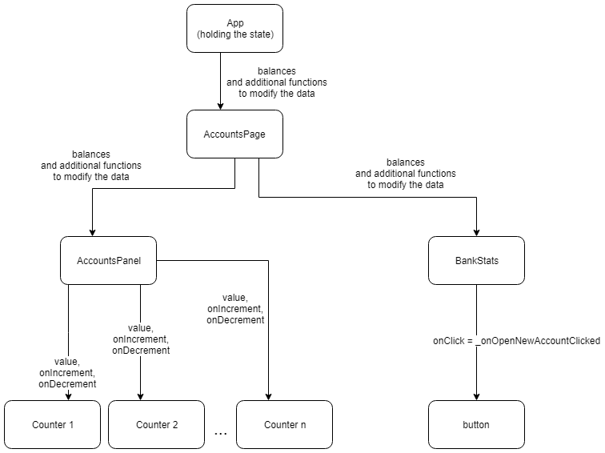

Prepared by Bartosz Lewiński (based on previous workshop by Grzegorz Rozdzialik)
Workshop repo: https://github.com/Blewin/react-redux-state-management-workshop
Prop drilling can get out of hand.
Redux is an excellent solution for big projects*
We'll work on previous codebase - with Redux! We'll implement basic elements, and see how they interact. If time will allow - we'll go deeper!
git clone git@github.com:Blewin/react-redux-state-management-workshop.git
npm installnpm startsrc directory{
party: {
isJumping: false,
},
accounts: {
alice: 20,
bob: -2,
charlie: 13,
}
}
dispatch({
type: 'JUMP'
})
dispatch({
type: 'JOIN PARTY',
userId: 'alice'
payload: {
partyNr: 3,
}
})
function partyReducer(state = INITIAL_STATE, action) {
switch (action.type) {
case 'JUMP':
return {
...state,
isJumping: true,
};
default:
return state;
}
}
dispatch({
type: 'JUMP'
})
{
isJumping: false,
isWild: true,
}
dispatch({
type: 'JUMP'
})
{
isJumping: true,
isWild: true,
}
function mapStateToProps(state, props) {
return {
value: state.accounts[props.userId],
}
}
function mapDispatchToProps(dispatch, props) {
return {
onIncrement: () => dispatch({type: 'INCREMENT', id: props.userId}),
onDecrement: () => dispatch({type: 'DECREMENT', id: props.userId}),
}
}
export const ConnectedCounter = connect(mapStateToProps, mapDispatchToProps)(Counter);
Task 1: Figure out what was done to this app and have a feel how it works
task-X (e.g. task-1) - starting point for a steptask-X branch. Use npm run test to verify your solution.task-X-solution (e.g. task-1-solution) contains an example solutionDebugging is fun, but let's allow users to create users too.
Branch: task-2
Rules:
new-account-buttonopenNewAccountTask: Display the number of accounts in Bank Stats - reintroducinng previous feature
Let's do it without tests!
Tools you'll learn to use: React update visualiser. https://chrome.google.com/webstore/detail/react-developer-tools
If you want to, test in branch task-3-structured will guide you to a nicer solution
Branch: task-4
Task: implement reducer to remove an account, and add button to do it
Rules:
CounteridAdvanced: add unit tests for reducer
Thank you for your participation.